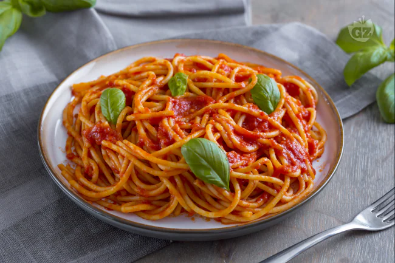

Faxo's Tomato Sauce Pasta

I'm Italian, this recipe could not be avoided. And here it is. My belovec tomato sauce pasta. Made the TRUE italian way. Simple ingredients, yet super flavourful.
Ingredients (4 people)
- 400g Pasta (spaghetti, rigatoni, whatever)
- 400g Tomatoes peeled
- Basil, Some leaves
- Garlic, 1
- Extra Virgin Olive Oil
- Garlic, 1
Steps
- Put water to boil in a large and tall pan
- Put on heat a sauce pan, add olive oil, smash lightly the garlic and put it the pan. Let it take some heat but don't burn it. Add the basil stems and leaves and let fry for 1-2min
- Add the tomatoes, smashed and without seeds. Bring it to a boil, remove the garlic and then let it simmer for 15-20min on low heat (maybe cover it a little bit to prevent the sauce spread on your kitchen
- When the water boils, salt it (a handful of salt based on the quantity of water and then put the pasta in. Strit occasionally
- When the pasta is 3 minutes from the cooking time, take it and put it in the tomato sauce. ALERT! KEEP THE PASTA WATER
- Add some pasta water to the sauce and continue to stir it continuously!
- Remove the basil, add a splash of olive oil and serve.
- Simple and perfect.